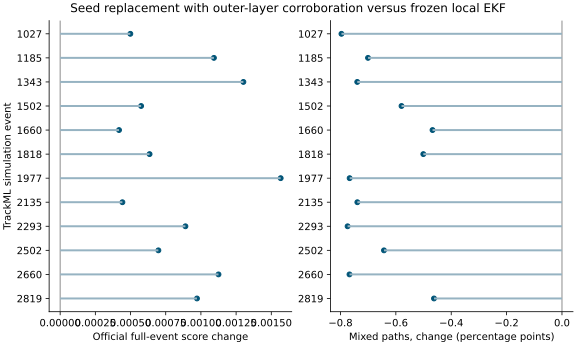

TRACK-X: Pixel seed replacement and uncertainty-aware barrel tracking on simulated TrackML events
Abstract
We tested whether correcting pixel seeds improves a local extended Kalman barrel tracker. On twelve prospectively selected complete events, the validation-selected beam method changed mean official score by +0.000851 (paired event-bootstrap 95% interval +0.000663 to +0.001054). The prespecified trade-off rule selected the challenger.
Problem and related work
Pattern recognition must distinguish charged trajectories that pass close together, with finite resolution, inefficiency and high occupancy. TrackML supplies simulated measurements, particle identities and weighted event scoring. ACTS provides experiment-independent propagation and track fitting. The original TRACK-X synthetic GNN study used an idealized cylinder geometry. Historical official-data controls found little score benefit from learned seed ranking. This study tests whether correcting a measurement before extension addresses an earlier source of error. TrackML challenge · ACTS framework · Phase IV
Detector, algorithms and measurement
Seeds use three or four measurements in the pixel barrel, arranged in overlapping azimuthal tilings. The baseline ranks sparse triplets and quadruplets, resolves ownership and extrapolates outward into six barrel layers. In an axial field a prompt track advances by Δasin(hr) in azimuth and tΔ[asin(hr)/h] in z, with signed half-curvature h and longitudinal slope t. The EKF propagates their covariance and gates innovations at each actual hit radius. Omega retains original seeds and considers bounded same-layer substitutions ranked by prompt residuals and an outer-layer innovation. Candidate generation uses measured hits and geometry only. Truth enters after assignment. No network was trained in Omega. Equations · Seed methods · Competing hypotheses
Experimental design
Events 1003–1005 supplied development controls and 1002 selected the challenger. We excluded all historical IDs through 1026. Twelve evenly spaced eligible positions in train_1.zip supplied final confirmation after selection was committed. All methods use the organizers’ complete-event score. Custom efficiency requires a unique majority match recovering at least half of a particle’s hits among particles with at least three hits. Fake and duplicate fractions divide unmatched and repeat qualifying candidates by all paths. Mixed paths contain two signal identities; severe merges contain two hits apiece from at least two signal particles. Runtime uses one CPU process. Protocol · Input hashes
Independent confirmation
| method | score | efficiency | fake | mixed | severe | retention | s/event |
|---|
| local | 0.227243 | 0.271204 | 0.490459 | 0.376975 | 0.001623 | 1.000000 | 1.741801 |
| beam | 0.228094 | 0.272223 | 0.488567 | 0.370361 | 0.001694 | 0.889955 | 1.952530 |
| event | hits | baseline score | candidate score | delta | baseline mixed | candidate mixed | peak MiB |
|---|
| event000001027 | 116111 | 0.221703 | 0.222202 | 0.000499 | 0.392371 | 0.384406 | 369.468750 |
| event000001185 | 109191 | 0.229599 | 0.230692 | 0.001092 | 0.380692 | 0.373687 | 369.468750 |
| event000001343 | 96498 | 0.231111 | 0.232412 | 0.001302 | 0.377358 | 0.369964 | 369.468750 |
| event000001502 | 112455 | 0.225529 | 0.226104 | 0.000575 | 0.393432 | 0.387637 | 369.468750 |
| event000001660 | 100029 | 0.230310 | 0.230729 | 0.000418 | 0.352608 | 0.347933 | 369.468750 |
| event000001818 | 112528 | 0.226833 | 0.227469 | 0.000635 | 0.372523 | 0.367516 | 369.468750 |
| event000001977 | 98214 | 0.224522 | 0.226089 | 0.001567 | 0.352505 | 0.344836 | 369.468750 |
| event000002135 | 114897 | 0.226803 | 0.227246 | 0.000442 | 0.399916 | 0.392525 | 369.468750 |
| event000002293 | 121552 | 0.222138 | 0.223028 | 0.000890 | 0.403018 | 0.395275 | 369.468750 |
| event000002502 | 116539 | 0.227229 | 0.227927 | 0.000698 | 0.400041 | 0.393613 | 369.468750 |
| event000002660 | 96423 | 0.228833 | 0.229958 | 0.001125 | 0.355845 | 0.348171 | 369.468750 |
| event000002819 | 92400 | 0.232299 | 0.233271 | 0.000972 | 0.343393 | 0.338771 | 369.468750 |

Paired event differences. Each row represents a complete simulated event.
Seed contamination and ablations
The baseline had 33.10% mixed seeds on the new events. The candidate had 32.34% and retained 89.00% of exactly pure original seeds. The mean paired change in final mixed fraction was -0.006614 and in severe fraction +0.000071. Strict rejection cost score on development data. The alternative-hit and global competition arms isolate retention and ownership costs. Ablation tables · Seed failure strata
Fit, coverage and computing
Backward smoothing worsened the median curvature discrepancy on pure validation paths. A separate forward-disk prototype added full-event score in three historical development events. Its prospective generalization remains untested. Seed ordering admitted an exactly matching vectorized kernel in three event-level comparisons. The highest confirmation process RSS was 369.5 MiB. Fit study · Disk study · Performance
Limitations and conclusions
The study tests one frozen intervention on official simulation. Selection used one validation event. Approximate covariance, prompt constraints, greedy ownership, fixed small neighbor pools and incomplete detector coverage limit transportability. Consecutive detector-production conditions can correlate events even in an evenly spaced archive sample. The bootstrap does not model simulation or calibration systematics. No matched ACTS run or external replication has been performed. The most informative further check would independently reproduce seed-level and full-event results across different simulation conditions and test barrel/disk ambiguity on a newly frozen cohort. Full paired uncertainty · Internal review · Reproduction